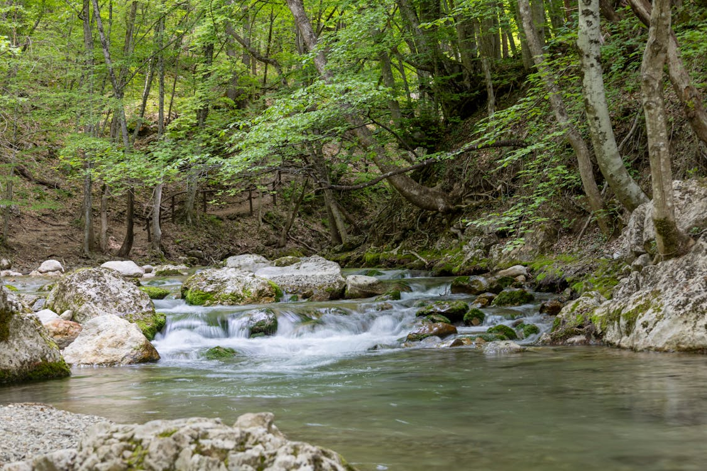

Protejarea mediului este importantă pentru sănătatea oamenilor și a naturii. Aerul curat, apa potabilă și solul fertil sunt esențiale pentru viață, iar poluarea le afectează direct.
De asemenea, protejarea mediului ajută la reducerea schimbărilor climatice. Prin acțiuni simple, precum reciclarea și economisirea energiei, putem contribui la un viitor mai sigur.
În plus, conservarea mediului înseamnă protejarea plantelor și animalelor. Astfel, menținem echilibrul naturii și asigurăm resurse pentru generațiile viitoare.